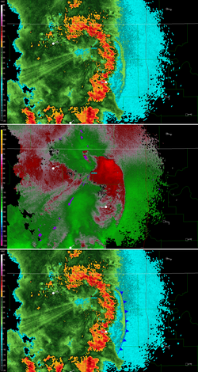
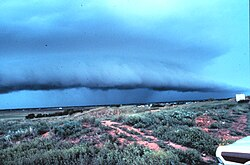
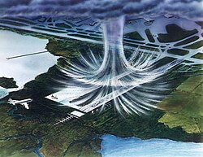
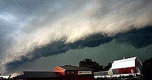
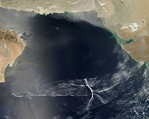

Outflow boundary
{kind=link}

An outflow boundary, also known as a gust front, is a storm-scale or mesoscale boundary separating thunderstorm-cooled air (outflow) from the surrounding air; similar in effect to a cold front, with passage marked by a wind shift and usually a drop in temperature and a related pressure jump. Outflow boundaries can persist for 24 hours or more after the thunderstorms that generated them dissipate, and can travel hundreds of kilometers from their area of origin. New thunderstorms often develop along outflow boundaries, especially near the point of intersection with another boundary (cold front, dry line, another outflow boundary, etc.). Outflow boundaries can be seen either as fine lines on weather radar imagery or else as arcs of low clouds on weather satellite imagery. From the ground, outflow boundaries can be co-located with the appearance of roll clouds and shelf clouds.[1]
Outflow boundaries create low-level wind shear which can be hazardous during aircraft takeoffs and landings. If a thunderstorm runs into an outflow boundary, the low-level wind shear from the boundary can cause thunderstorms to exhibit rotation at the base of the storm, at times causing tornadic activity. Strong versions of these features known as downbursts can be generated in environments of vertical wind shear and mid-level dry air. Microbursts have a diameter of influence less than 4 kilometres (2.5 mi), while macrobursts occur over a diameter greater than 4 kilometres (2.5 mi). Wet microbursts occur in atmospheres where the low levels are saturated, while dry microbursts occur in drier atmospheres from high-based thunderstorms. When an outflow boundary moves into a more stable low level environment, such as into a region of cooler air or over regions of cooler water temperatures out at sea, it can lead to the development of an undular bore.[2]
Definition
[edit]{kind=link}

An outflow boundary, also known as a gust front or arc cloud, is the leading edge of gusty, cooler surface winds from thunderstorm downdrafts; sometimes associated with a shelf cloud or roll cloud. A pressure jump is associated with its passage.[3] Outflow boundaries can persist for over 24 hours and travel hundreds of kilometers (miles) from their area of origin.[1] A wrapping gust front is a front that wraps around the mesocyclone, cutting off the inflow of warm moist air and resulting in occlusion. This is sometimes the case during the event of a collapsing storm, in which the wind literally "rips it apart".[4]
Origin
[edit]{kind=link}

A microburst is a very localized column of sinking air known as a downburst, producing damaging divergent and straight-line winds at the surface that are similar to but distinguishable from tornadoes which generally have convergent damage.[2] The term was defined as affecting an area 4 kilometres (2.5 mi) in diameter or less,[5] distinguishing them as a type of downburst and apart from common wind shear which can encompass greater areas. They are normally associated with individual thunderstorms. Microburst soundings show the presence of mid-level dry air, which enhances evaporative cooling.[6]
Organized areas of thunderstorm activity reinforce pre-existing frontal zones, and can outrun cold fronts. This outrunning occurs within the westerlies in a pattern where the upper-level jet splits into two streams. The resultant mesoscale convective system (MCS) forms at the point of the upper level split in the wind pattern in the area of best low level inflow. The convection then moves east and toward the equator into the warm sector, parallel to low-level thickness lines. When the convection is strong and linear or curved, the MCS is called a squall line, with the feature placed at the leading edge of the significant wind shift and pressure rise which is normally just ahead of its radar signature.[7] This feature is commonly depicted in the warm season across the United States on surface analyses, as they lie within sharp surface troughs.
A macroburst, normally associated with squall lines, is a strong downburst larger than 4 kilometres (2.5 mi).[8] A wet microburst consists of precipitation and an atmosphere saturated in the low-levels. A dry microburst emanates from high-based thunderstorms with virga falling from their base.[6] All types are formed by precipitation-cooled air rushing to the surface. Downbursts can occur over large areas. In the extreme case, a derecho can cover a huge area more than 200 miles (320 km) wide and over 1,000 miles (1,600 km) long, lasting up to 12 hours or more, and is associated with some of the most intense straight-line winds, but the generative process is somewhat different from that of most downbursts.[9]
Appearance
[edit]{kind=link}

At ground level, shelf clouds and roll clouds can be seen at the leading edge of outflow boundaries.[10] Through satellite imagery, an arc cloud is visible as an arc of low clouds spreading out from a thunderstorm. If the skies are cloudy behind the arc, or if the arc is moving quickly, high wind gusts are likely behind the gust front.[11] Sometimes a gust front can be seen on weather radar, showing as a thin arc or line of weak radar echos pushing out from a collapsing storm. The thin line of weak radar echoes is known as a fine line.[12] Occasionally, winds caused by the gust front are so high in velocity that they also show up on radar. This cool outdraft can then energize other storms which it hits by assisting in updrafts. Gust fronts colliding from two storms can even create new storms. Usually, however, no rain accompanies the shifting winds. An expansion of the rain shaft near ground level, in the general shape of a human foot, is a telltale sign of a downburst. Gustnadoes, short-lived vertical circulations near ground level, can be spawned by outflow boundaries.[6]
Effects
[edit]{kind=link}

Gust fronts create low-level wind shear which can be hazardous to planes when they takeoff or land.[13] Flying insects are swept along by the prevailing winds.[14] As such, fine line patterns within weather radar imagery, associated with converging winds, are dominated by insect returns.[15] At the surface, clouds of dust can be raised by outflow boundaries. If squall lines form over arid regions, a duststorm known as a haboob can result from the high winds picking up dust in their wake from the desert floor.[16] If outflow boundaries move into areas of the atmosphere which are stable in the low levels, such through the cold sector of extratropical cyclones or a nocturnal boundary layer, they can create a phenomenon known as an undular bore, which shows up on satellite and radar imagery as a series of transverse waves in the cloud field oriented perpendicular to the low-level winds.[17]
See also
[edit]{kind=link}
References
[edit]- 1 2 National Weather Service (2004-11-01). "Outflow Boundary". Retrieved 2008-07-09.
- 1 2 Nolan Atkins (2009). "How to distinguish between tornado and microburst (straight-line) wind damage". Lyndon State College Meteorology. Retrieved 2008-07-09.
- ↑ Glossary of Meteorology (2009). "Gust Front". American Meteorological Society. Archived from the original on 2011-05-05. Retrieved 2009-07-03.
- ↑ National Weather Service (2004-11-01). "Wrapping Gust Front". Retrieved 2009-07-03.
- ↑ National Weather Association (2003-11-23). "Welcome to Lesson 5". Archived from the original on 2009-01-06. Retrieved 2008-07-09.
- 1 2 3 Fernando Caracena; Ronald L. Holle & Charles A. Doswell III (2002-06-26). "Microbursts: A Handbook for Visual Identification". Cooperative Institute for Mesoscale Meteorological Studies. Retrieved 2008-07-09.
- ↑ National Oceanic and Atmospheric Administration – Office of the Federal Coordinator for Meteorological Services and Supporting Research (May 2001). "National Severe Local Storms Operations Plan – FCM-P11-2001 – Chapter 2: Definitions" (PDF). Washington, D.C.: United States Department of Commerce. pp. 2–1. Archived from the original (PDF) on 2009-05-06. Retrieved 2019-07-01.
{{cite web}}: CS1 maint: multiple names: authors list (link) CS1 maint: numeric names: authors list (link) - ↑ Ali Tokay (2000-04-21). "Chapter #13: Thunderstorms". University of Maryland Baltimore College. Archived from the original on 2008-06-14. Retrieved 2008-07-09.
- ↑ Peter S. Parke & Norvan J. Larson (2005-11-23). "Boundary Waters Windstorm". Duluth, Minnesota: National Weather Service Forecast Office. Retrieved 2008-07-30.
- ↑ National Oceanic and Atmospheric Administration – Office of the Federal Coordinator for Meteorological Services and Supporting Research (December 2005). "Federal Meteorological Handbook No. 11 – FCM-H11B-2005 – Doppler RADAR Meteorological Observations Part B Doppler RADAR Theory and Meteorology" (PDF). Washington, D.C.: United States Department of Commerce. Retrieved 2019-07-01.
{{cite web}}: CS1 maint: multiple names: authors list (link) CS1 maint: numeric names: authors list (link) - ↑ Pravas Mahapatra; Richard Doviak; Vladislav Mazur; Dušan S. Zrnić (1999). Aviation weather surveillance systems: advanced radar and surface sensors for flight safety and air traffic management, Volume 183. Institution of Electrical Engineers. p. 322. ISBN 978-0-85296-937-3. Retrieved 2009-09-01.
- ↑ Glossary of Meteorology (2009). "Fine Line". American Meteorological Society. Archived from the original on 2011-06-06. Retrieved 2009-07-03.
- ↑ Diana L. Klingle; David R. Smith & Marilyn M. Wolfson (May 1987). "Gust Front Characteristics as Detected by Doppler Radar". Monthly Weather Review. 115 (5): 905–918. Bibcode:1987MWRv..115..905K. doi:10.1175/1520-0493(1987)115<0905:GFCADB>2.0.CO;2.
- ↑ Diana Yates (2008). "Birds migrate together at night in dispersed flocks, new study indicates". University of Illinois at Urbana–Champaign. Archived from the original on 2008-10-22. Retrieved 2009-04-26.
- ↑ Bart Geerts & Dave Leon (2003). "P5A.6 Fine-Scale Vertical Structure of a Cold Front As Revealed By Airborne 95 GHz Radar" (PDF). University of Wyoming. Retrieved 2009-04-26.
- ↑ Western Region Climate Center (2002). "H". Desert Research Institute. Archived from the original on 2017-05-21. Retrieved 2006-10-22.
- ↑ Martin Setvak; Jochen Kerkmann; Alexander Jacob; HansPeter Roesli; Stefano Gallino & Daniel Lindsey (2007-03-19). "Outflow from convective storm, Mauritania and adjacent Atlantic Ocean (13 August 2006)" (PDF). Agenzia Regionale per la Protezione dell'Ambiente Ligure. Archived from the original on 25 July 2011. Retrieved 2009-07-03.
{{cite web}}: CS1 maint: bot: original URL status unknown (link)
External links
[edit]- Outflow boundary over south Florida MPEG, 854KB